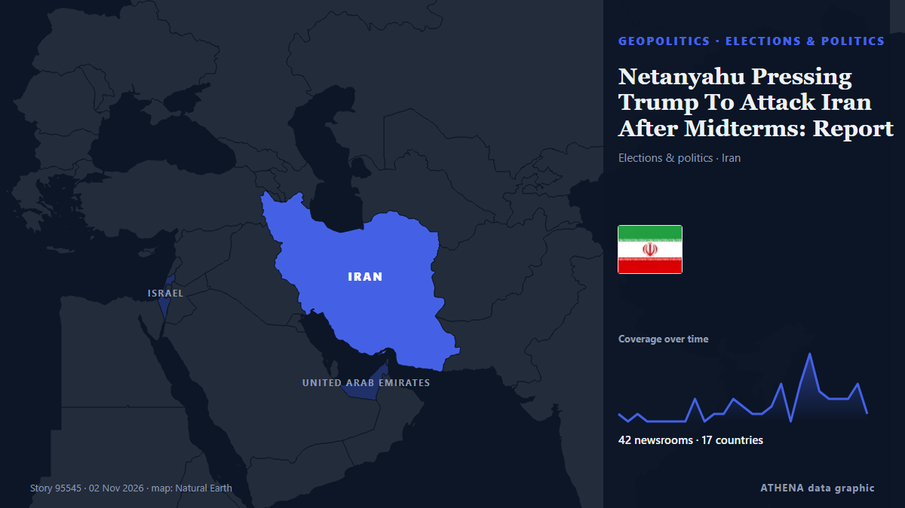

Netanyahu Pressing Trump To Attack Iran After Midterms: Report

Democratic doctors aim to convert the backlash against the Trump administration’s health policies into midterm votes. من Al Jazeera English
نشرته بشكل مستقل 42 مصدرًا في 17 دولة منذ 31 أكتوبر، وأول من نشره Al Jazeera English؛ والتغطية لا تزال تتسع. يقدّر ATHENA الخطر بأنه مرتفع (7.2/10)، ويعود ذلك أساسًا إلى خطورة الضرر الموصوف ونطاقه الجغرافي والقطاعي، مقارنة بـ0.0 قبل 24 ساعة. الثقة 89٪ (مرتفعة)، وعدد المصادر المستقلة المؤكِّدة: 42، بمتوسط موثوقية للمصادر يبلغ 74٪. وسائل الإعلام حسب البلد: الولايات المتحدة (14), المملكة المتحدة (4), إسرائيل (4). التغطية: من 31 أكتوبر إلى 2 نوفمبر، 45 ساعة.
لماذا يهم: قد تغيّر التطورات الأمنية والدبلوماسية التحالفات والتجارة والأسواق إلى ما هو أبعد بكثير من الدول المعنية مباشرة.
ما الذي تغيّر: 42 تقارير جديدة من 35 غرف أخبار خلال 24 ساعة حتى 2 نوفمبر.
العنوان الأول: Trump says he had 'very good talk' with Netanyahu, discussed Iran
تُعرض العناوين بالإنجليزية كما نُشرت.
نظرة سريعة
اختير وقُيِّم وكُتب وفق منهجية ATHENA المنشورة. لا يتدخل أي محرر في الأحداث بعينها. كيف يُنتَج ›
| 31 Oct 17:19 UTC | 1 |
|---|---|
| 31 Oct 19:19 UTC | 0 |
| 31 Oct 21:19 UTC | 1 |
| 31 Oct 23:19 UTC | 0 |
| 01 Nov 01:19 UTC | 0 |
| 01 Nov 03:19 UTC | 0 |
| 01 Nov 05:19 UTC | 0 |
| 01 Nov 07:19 UTC | 0 |
| 01 Nov 09:19 UTC | 3 |
| 01 Nov 11:19 UTC | 0 |
| 01 Nov 13:19 UTC | 1 |
| 01 Nov 15:19 UTC | 1 |
| 01 Nov 17:19 UTC | 3 |
| 01 Nov 19:19 UTC | 2 |
| 01 Nov 21:19 UTC | 1 |
| 01 Nov 23:19 UTC | 1 |
| 02 Nov 01:19 UTC | 2 |
| 02 Nov 03:19 UTC | 5 |
| 02 Nov 05:19 UTC | 0 |
| 02 Nov 07:19 UTC | 5 |
| 02 Nov 09:19 UTC | 9 |
| 02 Nov 11:19 UTC | 4 |
| 02 Nov 13:19 UTC | 3 |
| 02 Nov 15:19 UTC | 3 |
| 02 Nov 17:19 UTC | 3 |
| 02 Nov 19:19 UTC | 5 |
| 02 Nov 21:19 UTC | 1 |
| 02 Nov 03:03 UTC | 0.0 |
|---|---|
| 02 Nov 13:18 UTC | 3.7 |
| 02 Nov 22:35 UTC | 7.2 |
| 02 Nov 22:35 UTC | 7.2 |
لماذا هذه الأرقام
الأهمية
الخطر
الثقة
التغطية — من نشر الخبر ومتى
العنوان كما نُشر · يفتح الأصل- Al Jazeera English · قطرA cure for Trump? Why Democratic doctors are running in the 2026 midterms
- New Straits Times · ماليزياMONEY THOUGHTS: Plan for the many dimensions of your complex life
- The Economist - Finance & economics · المملكة المتحدةHow the Iran war has sowed panic among farmers
- The Economist - Finance & economics · المملكة المتحدةThe Iran war puts Asia in an energy panic
- Gulf News · الإمارات العربية المتحدةGCC urges Iran to respond to peace efforts as Britain strengthens Gulf defences
- Tehran Times · إيرانIran’s 40-Day War Changed How People Travel
- Times of India · الهندHow Iran targeted US air-defence network in the Gulf: Report
- The Jerusalem Post · إسرائيلIsrael, US have plan ready for third Iran war, Tehran's hidden weapons pose challenges - analysis
- The Jerusalem Post · إسرائيلIsrael ready to strike Iran with US, but specific joint goals remain unclear - sources
- The Independent · المملكة المتحدةTrump celebrates Halloween by melting down on another reporter at Mar-a-Lago party
- Fortune · الولايات المتحدةAs Trump eyes new attack, Iran vows to retaliate beyond the Mideast and target financial assets, while oil markets brace for generational damage
- ABC News Australia · أسترالياMore storms looming for SEQ as 'extreme' heatwave hits Gulf country
- The Hill · الولايات المتحدةBacon thinks there will be 'debate' about MAGA future if GOP does poorly in midterms
- Express Tribune · باكستانTehran engaged in ‘intensive shuttle diplomacy’ through Qatari, Pakistani mediators: Araghchi
- Haaretz (English) · إسرائيلEisenkot: Likud bid to delay results 'assault on democracy'; Netanyahu must go
- CNBC World · الولايات المتحدةRubio says Trump wants to end Iran war 'peacefully' even as both sides prepare for strikes
- TASS (English) · روسياTrump doesn't intend to resume strikes against Iran right after midterm elections — Axios
- The Jerusalem Post · إسرائيلNetanyahu urges Trump to attack Iran as US pursues further negotiations before midterms - report
- BBC News · المملكة المتحدةHow a Democrat in Michigan rocked the party days before the US midterms
- Foreign Policy · الولايات المتحدةDon’t Read Too Much Into These Midterms
- Responsible Statecraft · الولايات المتحدةUnhinged attacks against El-Sayed reach a fever pitch
- Türkiye Today · تركياTrump says US can 'close down' Iran anytime as Gulf braces for worst
- TASS (English) · روسياTrump may pin blame for war with Iran on Pentagon chief — magazine
- CBC News · كنداEconomic frustration set to boil over in midterm elections
- Indian Express · الهندUS Midterms: Why the swing state map looks different from 2024 presidential election
- The Straits Times · سنغافورةEurope space chief heads to Gulf as bloc looks beyond US
- Gulf News · الإمارات العربية المتحدةUS-Iran showdown: Trump keeps world guessing as Mideast remains on edge
- NPR World · الولايات المتحدةHow Arab Gulf states view Trump's Iran war plan
- NPR World · الولايات المتحدةGulf region on edge over possibility of renewed U.S. attacks against Iran
- NPR · الولايات المتحدةMorning news brief
- Al-Monitor · الولايات المتحدةEurope space chief heads to Gulf as bloc looks beyond US
- Free Malaysia Today · ماليزياEurope space chief heads to Gulf as bloc looks beyond US
- Business Insider · الولايات المتحدةThis crypto billionaire is spending tens of millions in the midterms to take on AI companies and the GOP
- New York Times Business · الولايات المتحدةGulf Economies, Torn by War in Iran, Desperately Need a Return to Normal
- France 24 English · فرنساMidterms: Will Trump backlash lead to Democratic landslide?
- NPR World · الولايات المتحدةHaley Stevens backs Mike Rogers. And, Gulf states brace for potential attack on Iran
- Hindustan Times · الهندTrump’s midterm test: What India is watching as global power equations shift
- Türkiye Today · تركياNetanyahu’s best hope may be Iran saying no to diplomacy
- gCaptain · الولايات المتحدةUAE to Protect Energy Infrastructure, Invest in New Export Routes to Prepare for Iran War, Minister Says
- Skift · الولايات المتحدةWar Insurance Dries Up for Gulf Events as U.S.-Iran Conflict Continues